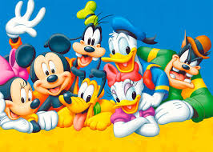
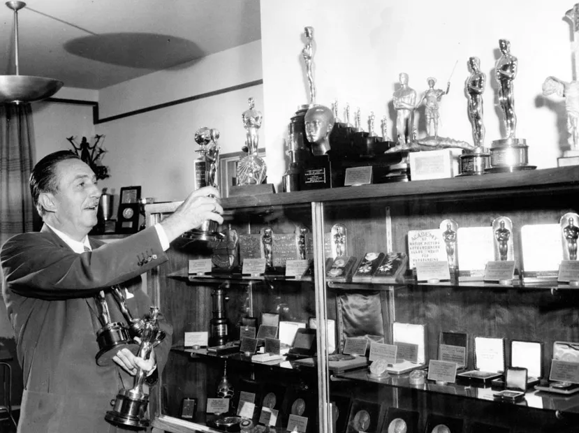

Quem foi Walt Disney
Walter Elias Disney (Chicago, 5 de dezembro de 1901 —
Los Angeles, 15 de dezembro de 1966)
conhecido como Walt Disney foi um produtor cinematográfico,
cineasta, diretor, roteirista, dublador, animador, empreendedor,
filantropo e cofundador da The Walt Disney Company.
Tornou-se famoso por seu pioneirismo no ramo das animações com a Disney,
tendo produzido o famoso longa-metragem de animação, Branca de Neve e os Sete Anões (1937),
e pelos seus personagens de desenho animado, como Mickey e Pato Donald.
Ele também é o idealizador dos parque temáticos sediados nos
Estados Unidos: Disneylândia e Walt Disney World Resort.
Ao longo da sua vida foi um símbolo da indústria da animação e um ícone da cultura popular.
Walt Disney é a pessoa que venceu o maior número de
Óscars na história, sendo 22 prêmios da Academia e 59 indicações.
Também venceu sete Emmy Awards. Walt Disney morreu de
câncer de pulmão em 15 de dezembro de 1966, em Burbank, Califórnia.
Ele deixou para trás um vasto legado: Uma universidade (California Institute of the Arts - CalArts),
numerosos curtas, documentários e filmes produzidos durante a sua vida;
e a Walt Disney Company é hoje um dos maiores conglomerados de entretenimento do mundo.
Infância e Juventude
Walt Disney nasceu no dia 5 de dezembro de 1901, em Chicago. Passou a maior parte de sua infância numa fazenda em Marceline, no Missouri.
Foi um período muito difícil para o menino, devido aos castigos impostos pelo pai, Elias Disney (1859-1941), homem bastante severo. Depois de descobrir que não tinha uma certidão de nascimento, alimentou a ideia de que era filho adotivo.
Esse fato iria influenciar algumas de suas atitudes posteriormente. Aos 16 anos, começou a estudar arte, além de ter participado da Ordem Demolay. Como não havia atingido a maioridade, foi-lhe recusada permissão quando procurou alistar-se no Exército durante a Primeira Guerra Mundial. Conjuntamente com um amigo, decidiu então juntar-se à Cruz Vermelha.
Pouco tempo depois, foi enviado para França, onde passou um ano a dirigir ambulâncias da Cruz Vermelha.
De volta aos Estados Unidos, matriculou-se na Kansas City Arts School. Em seguida, trabalhou em algumas agências publicitárias. A seguir, entrou para uma companhia cinematográfica, na qual ajudava a fazer os cartazes de propaganda dos filmes.
Carreira
Com o irmão Roy e o amigo Ub Iwerks, criou a pequena produtora Laugh-O-Gram,
que animava contos de fadas. Esses desenhos animados eram exibidos no cinema local antes dos filmes.
Em 1923, mudaram-se para Hollywood, em Los Angeles. Em Hollywood,
Walt Disney contratou a distribuidora de filmes M. J. Wrinkler,
dizendo que o seu estúdio de animação tinha diversos filmes para vender.
Wrinklers não só aceitou a oferta como também aceitou pagar 1 500 dólares por cada filme.
Depois de angariar dinheiro, adquirir material, contratar pessoal, Walt começa a fazer planos: Alice,
uma série em que uma menina convivia com personagens de cenário animado.
Foi durante este tempo de imenso trabalho em que Walt conheceu sua futura esposa, Lillian Bounds Disney.
Depois de Alice, veio Oswald, o coelho sortudo, também conhecido em português como Coelho Osvaldo,
foi um grande sucesso que levou à reavaliação dos valores dos contratos quanto aos preços dos filmes.
Foi para Nova Iorque,
onde foi apanhado de surpresa. O patrão para quem Walt desenhou Alice e Oswald, roubou-lhe as personagens,
a equipe de desenhistas e as encomendas, porque as mesmas não foram assinadas em seu nome.
Walt enviou um telegrama ao irmão dizendo que tudo estava certo e para não se preocupar,
pois ele já tinha em mente um personagem espetacular: Mickey Mouse.
Mickey Mouse
Para superar a fase difícil e contornar os prejuízos, Ub Iwerks criou para Walt Disney o Mickey Mouse em 1928
para competir com o sucesso do Gato Félix. O camundongo, desenhado a partir de uma série de círculos,
provou ser ideal para o desenho animado e se tornaria o personagem de maior sucesso dos estúdios Disney.
Nessa época, a produtora passou a ser mais bem organizada: Roy cuidava da parte financeira, Walt produzia e dirigia,
e Iwerks desenhava.
Em 1927, já se havia inventado o filme sonoro. Poucos anos depois,
inventou-se o filme colorido. Disney e seus assistentes utilizaram as novas técnicas com muita imaginação.
O primeiro desenho foi Plane Crazy, de 1928, no qual o personagem contracenava com sua namorada Minnie Mouse.
O primeiro desenho com som foi Steamboat Willie, também de 1928. As primeiras palavras do camundongo foram Hot dogs,
hot dogs,
numa canção do episódio The Karnival Kid, de 1929. Surgiram, em seguida,
mais personagens para contracenar com Mickey: Pato Donald, Pateta e Pluto.
O vilão João Bafo de Onça, que havia aparecido nos curtas de Alice, virou o principal inimigo do Mickey.
De 1929 a 1939, Disney produziu uma série de desenhos chamada "Silly Symphonies" (Sinfonias Tolas),
a primeira colorida. Mickey estrelava esses filmes ao lado dos novos personagens. O desenho "Flores e Árvores",
dessa série, recebeu o Oscar de melhor curta-metragem de animação de 1932.
Longas-metragens
Walt Disney pretendia fazer um longa-metragem da clássica história Branca de Neve.
Houve protestos por parte da equipe, mas o filme foi feito.
Após três anos de produção, desenho e músicas, o filme estreou.
Branca de Neve e os Sete Anões gerou fundos necessários para a construção
de um novo estúdio e foram criados novos longas-metragens: Pinóquio,
Fantasia e Bambi. Infelizmente, os tempos de lucro não duraram muito,
devido ao início da Segunda Guerra Mundial em 1939.

A Segunda Guerra Mundial
Com a entrada dos Estados Unidos na guerra, Disney foi convidado
pelas Forças Armadas para produzir desenhos animados de treinamento para os soldados.
Em seguida, começou a fazer filmes de propaganda militar,
nos quais utilizava principalmente seus personagens mais conhecidos
Algum tempo depois, ajudou a criar a "Aliança do
Cinema para a Preservação dos Ideais Estadunidenses",
com o objetivo de combater o comunismo no meio artístico.
Walt Disney prestou voluntariamente diversos
depoimentos na "Comissão das Atividades Antiamericanas".
Devido às suas atividades contra o comunismo,
em 1949 o governo soviético proibiu
a exibição de filmes dos estúdios Disney no país.
Cinderela e outras longas-metragens
Depois da guerra, Walt Disney estava com sua empresa arruinada.
Walt tinha duas opções: ou fazia um filme ou vendia a empresa.
Decidiu, assim, fazer o filme Cinderela.
O filme foi um sucesso e gerou riqueza para que a empresa continuasse.
Mas Walt Disney não trabalhou apenas com desenhos animados.
Seu primeiro longa-metragem com atores foi A Ilha do Tesouro (1950).
O primeiro sobre a natureza foi O Drama do Deserto (1953).
Em 1954, fez 20.000 léguas submarinas, baseado na obra do escritor francês Júlio Verne.
Dez anos depois, produziu Mary Poppins, uma mistura de desenho animado com personagens humanos.
O filme concorreu ao Oscar em 14 categorias, levando cinco prêmios,
incluindo o de melhor atriz, para Julie Andrews e o de melhor canção, por Chim Chim Cher-ee.
Disney produziu também diversos filmes para televisão,
sendo ele próprio o apresentador do seu programa.
Últimos anos
Disney obteve um de seus maiores êxitos em 1955 ao inaugurar a Disneylândia,
um superparque de diversões situado em Anaheim, na Califórnia.
O parque foi construído graças a uma parceria com a rede de televisão ABC.
Existe ainda um outro parque semelhante, chamado Walt Disney World,
perto de Orlando, na Flórida, que foi inaugurado em 1971, após a morte de Disney.
Quase todos os brinquedos, desfiles e espetáculos desses dois parques baseiam-se nos personagens
dos filmes de Disney.
O cineasta, devido ao seu falecimento em 1966 não viveu para ver as atrações da Disneyworld,
como o Epcot, o Magic Kingdom, os estúdios MGM (atual "Hollywood Studios")
e o Disney Animal Kingdom, além dos parques aquáticos.
Encontra-se sepultado no Forest Lawn Memorial Park, em Glendale, nos Estados Unidos.
Selo estadunidense de 1968.
Com a ajuda de Lillian Bounds e das filhas Diane Marie e Sharon Mae,
seu irmão Roy continuou comandando os negócios por mais algum tempo,
vindo a falecer um mês após o término da construção do
"Magic Kingdom" e a correspondente inauguração do "Walt Disney World".
Após a morte de Roy longos períodos de turbulência na administração da Companhia se seguiram,
só alcançando novamente a estabilidade na década de 1980 sob a direção da dupla Eisner-Wells.
Wells morreu num trágico acidente, fazendo com que Michael Eisner controlasse a empresa por longos anos,
até que devido a vários desgastes, inclusive decorrentes de atritos com Roy E. Disney, sobrinho de Walt,
Eisner entregasse em 30 de setembro de 2006 o cargo de
CEO para o então presidente da Disney, Robert (Bob) Iger.
Bob iniciou um novo ciclo de expansão da companhia,
cujo marco inicial é a compra dos estúdios Pixar, o que fez com que Steve Jobs, CEO da Apple Inc.
e dono da Pixar se tornasse o maior acionista pessoa física da Walt Disney Company.
Em 2001, ano do centenário de nascimento de Disney, o desenho animado
"Branca de Neve e os Sete Anões" foi relançado em vídeo e DVD com várias novidades,
como um "making of" do desenho, um videoclipe da canção Some Day My Prince Will Come,
cantada por Barbara Streisand, e um jogo. Nos Estados Unidos,
particularmente na Disneyworld e em Hollywood,
diversos eventos foram programados para comemorar o centenário.
Para além de estúdios cinematográficos, o vasto império criado por
Walt Disney inclui diversos parques temáticos (Disneylândia, Disneyland Paris, Disney Japan, etc.),
inúmeros canais de televisão e elevados rendimentos originados na venda direta de filmes e livros,
e nos direitos de utilização por outras entidades das imagens dos personagens.
Walt Disney transformou-se numa lenda, tendo criado, com a ajuda da sua equipe,
todo um universo de referências no imaginário infantil de sucessivas gerações.
Além disso, Walt Disney é a pessoa que mais ganhou prêmios Oscar em todos os tempos.
Morte
Disney morreu em 15 de dezembro de 1966 em decorrência de um avançado câncer de pulmão. Seu corpo foi cremado dois dias depois, e suas cinzas foram enterradas no Forest Lawn Memorial Park, em Glendale, Califórnia.
Oscars

Walt Disney é recordista de maior número de indicações ao Oscar
(com cinquenta e nove) e número de Oscares entregues (22). Ele também ganhou quatro Oscares honorários.
1932: Oscar de Melhor Curta-Metragem de Animação: Flores e Árvores (1932)
1932: Prémio Honorário da Academia: criação de Mickey Mouse.
1934: Oscar de Melhor Curta-Metragem de Animação: Os Três Porquinhos (1933)
1935: Oscar de Melhor Curta-Metragem de Animação para: A Tartaruga e a Lebre (1934)
1936: Oscar de Melhor Curta-Metragem de Animação para: Três Gatinhos Órfãos (1935)
1937: Oscar de Melhor Curta-Metragem de Animação para: Primo País (1936)
1938: Oscar de Melhor Curta-Metragem de Animação para: The Old Mill (1937)
1939: Oscar de Melhor Curta-Metragem de Animação para: Ferdinando, o Touro (1938)
1939: Oscar honorário para: Branca de Neve e os Sete Anões (1937)
"Para Branca de Neve e os Sete Anões,
reconhecido como uma inovação significativa tela que tem encantado milhões e
foi pioneiro de uma nova área de entretenimento grande"
(o prêmio foi uma estatueta e sete estatuetas em miniatura)
1940: Oscar de Melhor Curta-Metragem de Animação para: O Patinho Feio (1939)
1941: Oscar honorário para: Fantasia (1940), compartilhada com: William E. Garity e JNA Hawkins.
"Por sua extraordinária contribuição para o avanço do uso do som no cinema através da produção de Fantasia"
1942: Oscar de Melhor Curta-Metragem de Animação para: Empreste uma pata (1941)
1943: Oscar de Melhor Curta-Metragem de Animação para: Der Fuehrer's Face (1942)
1949: Oscar de melhor curta-metragem em Live Action para: Seal Island (1948)
1949: Thalberg Memorial Award Irving G. (Honorary Award)
1951: Oscar de melhor curta-metragem em Live Action para: Beaver Valley (1950)
1952: Oscar de melhor curta-metragem em Live Action para: Nature's Half Acre (1951)
1953: Oscar de melhor curta-metragem em Live Action para: Aves de Água (1952)
1954: Oscar de melhor documentário para: Living Desert (1953)
1954: Oscar de melhor documentário de curta-metragem para: O esquimó do Alasca (1953)
1954: Oscar de Melhor Curta-Metragem de Animação para: Toot Whistle Plunk e Boom (1953)
1954: Oscar de melhor curta-metragem em Live Action para: Bear Country (1953)
1956: Oscar de melhor documentário de curta-metragem para: Homens Contra o Ártico
1959: Oscar de melhor curta-metragem em Live Action para: Grand Canyon
1969: Oscar de Melhor Curta-Metragem de Animação para: Ursinho Pooh e o dia tempestuoso
Diane Disney Miller
Diane Disney Miller (Los Angeles, 18 de dezembro de 1933 - Napa, 19 de novembro de 2013)
foi a única filha biológica de Walt Disney.
Filha de Lillian Marie Bounds Disney com Walt Disney, criou o Walt Disney Family Museum,
em São Francisco no ano de 2009, ou seja, um museu da família sobre a vida de Walt Disney,
além de ajudar a fundar a Walt Disney Concert Hall. Diane gerenciava uma vinícola no vale do Napa.